The New PHP
DrupalCamp Sao Paulo 2015
About me

I work for FFW
(and you should too)
@erikaheidi
http://erikaheidi.com/blog/celebrating-php-twenty-years
PHP 7
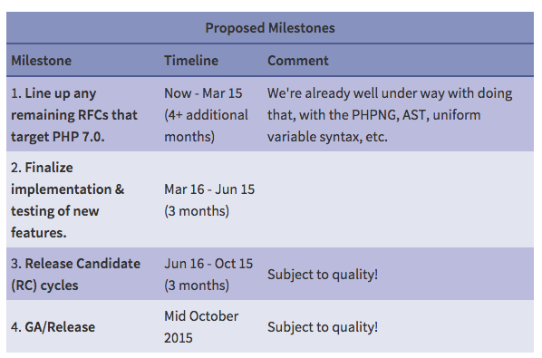
https://wiki.php.net/rfc/php7timeline
Symfony 3
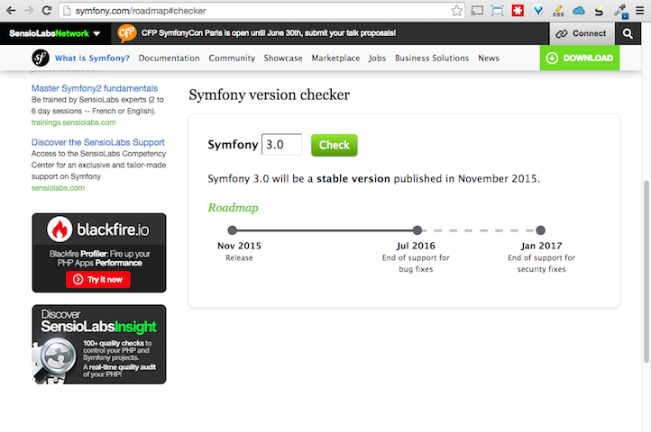
http://symfony.com/roadmap?version=3.0#checker
Drupal 8
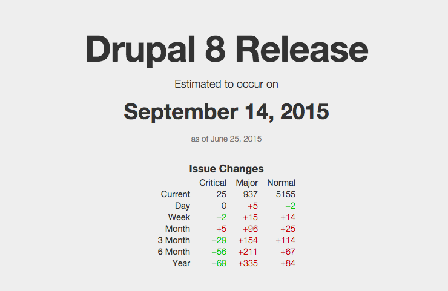
https://drupalreleasedate.com/
Symfony
What is Symfony
Symfony is a group of decoupled components and other standalone PHP libraries.
Then, based on these components, Symfony is also a full-stack web framework.
Drupal dependencies
What is the benefit of reusing more code.
The Best Code is No Code At All-- Jeff Atwood
Code is bad. It rots. It requires periodic maintenance. It has bugs that need to be found. New features mean old code has to be adapted.-- Rich Skrenta
Standards Recommendations
Framework Interoperability Group
http://www.php-fig.org
Accepted recommendations
- PSR-0 Autoloading Standard
- PSR-1 Coding Standards
- PSR-2 Coding Style Guide
- PSR-3 Logger Interface
- PSR-4 Improved Autoloading
- PSR-7 HTTP Message Interfaces
Library sharing
Composer

Download Composer
$ curl -sS https://getcomposer.org/installer | php
$ chmod +x composer.phar
$ mv composer.phar /usr/local/bin/composer
How to use Composer
$ composer init
$ composer search faker
$ composer show fzaninotto/faker
$ composer require fzaninotto/faker:v1.3.0
How to use Composer
/* composer.json */
{
"require": {
"fzaninotto/faker": "v1.3.0"
}
}
$ composer install
$ composer update
$ composer show --installed
Composer Manager
$ drush dl composer_manager
$ drush en -y composer_manager
$ drush composer-manager-init
Packagist
Why composer and packagist are important?
Which problem they solved ?
The CopyPasta era
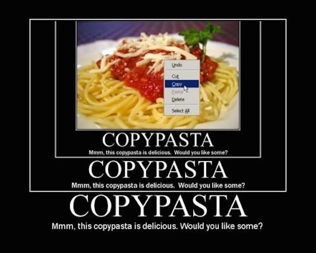
Why release my code as a package or library?
You sould try to move the generic and reusable logic to and external repository and share at github/bitbucket or other.
Same Library can be shared accross differents projects, CMS and frameworks. (Drupal 7/8, Symfony, Silex, Laravel, Wordpress, Backdrop, etc.)
Drupal Commerce
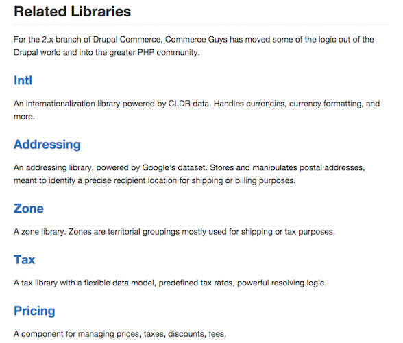
The HTTP Lifecycle
In every web application, in any language, you always have one goal, read and understand the incoming HTTP request in order to create and return the appropriate HTTP response.
The Request/Response Flow
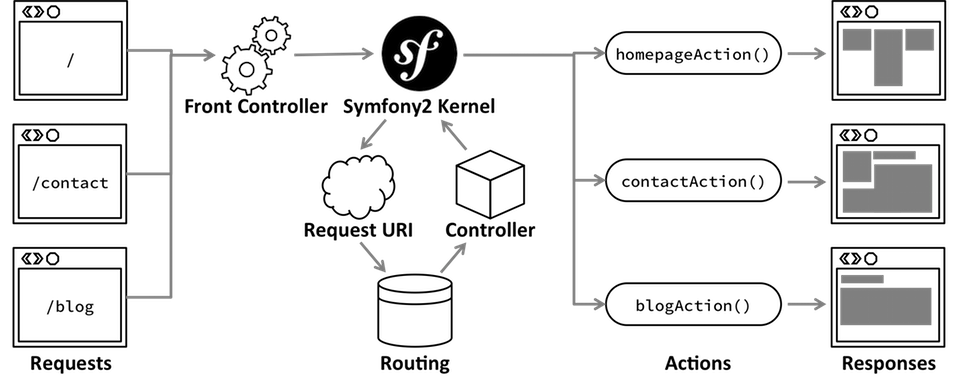
Routing
A route is a map from a URL path to a controller.
Controller
A controller is a PHP method or call-back that takes information from the HTTP request and constructs and returns an HTTP response.
Route/Controller - Symfony
src/AppBundle/resources/config/routing.yml
hello_name:
path: /hello/{name}
defaults: { _controller: AppBundle:Hello:index }
src/AppBundle/Controller/HelloController.php
namespace AppBundle\Controller;
use Symfony\Component\HttpFoundation\Response;
class HelloController {
public function indexAction($name) {
return new Response('Hello '.$name);
}
}
Route/Controller - Silex
web/index.php
require_once __DIR__.'/../vendor/autoload.php';
$app = new Silex\Application();
$app->get('/hello/{name}', function($name) {
return 'Hello '.$name;
});
$app->run();
Route/Controller - Silex
web/index.php
$app->get(
'/hello-controller/{name}',
'DrupalCampSP\Controller\HelloController::indexAction'
);
src/DrupalCampSP/Controller/HelloController.php
namespace DrupalCampSP\Controller;
use Symfony\Component\HttpFoundation\Response;
class HelloController {
public function indexAction($name) {
return new Response('Hello '.$name);
}
}
Route/Controller - Drupal
drupalcampsp.routing.yml
drupalcampsp.hello_controller:
path: 'hello/{name}'
defaults:
_content: '\Drupal\drupalcampsp\Controller\HelloController::index'
src/Controller/HelloController.php
namespace Drupal\drupalcampsp\Controller;
class HelloController {
public function index($name)
{
return [
'#type' => 'markup',
'#markup' => $this->t('Hello @name!', ['@name' => $name])
];
}
}
3rd party libraries and projects
You should be using
Seriously
Testing
PHPUnit is a programmer-oriented testing framework for PHP.
https://phpunit.de/
Behat is an open source behavior-driven development framework for PHP 5.3 and 5.4.
http://behat.orgPHP Coding Standards Fixer
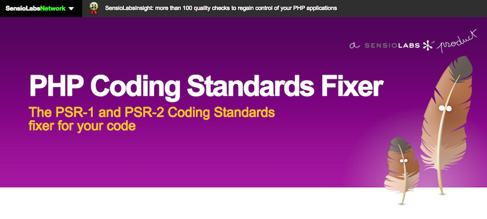
Insight
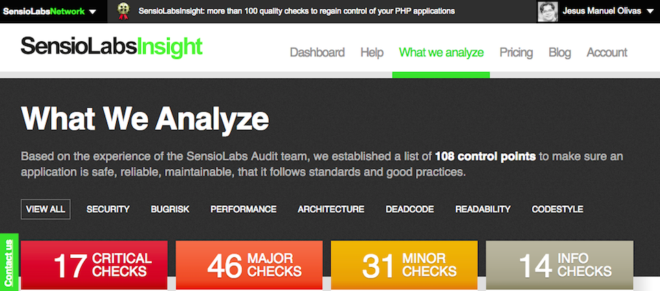
Security Vulnerability Checker
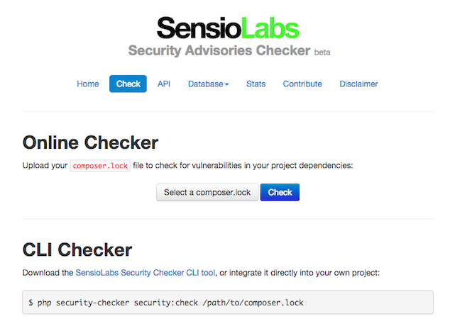
WebProfiler
Collects information about each request made to your application and allows you to visualize it in the browser.
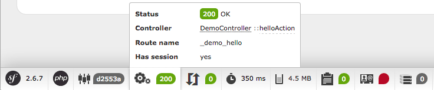
WebProfiler
Symfony
Silex
Drupal
LadyBug
Ladybug provides an easy and extensible var_dump/print_r replacement for PHP 5.3+.
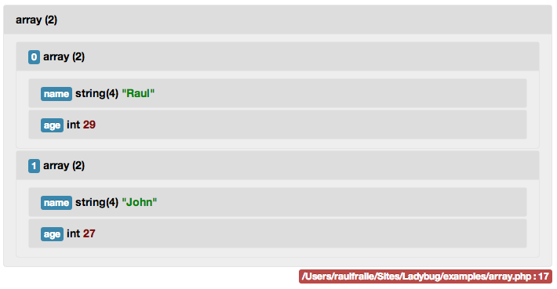
LadyBug
Symfony
https://github.com/raulfraile/LadybugBundleSilex
https://github.com/bangpound/ladybug-silex-providerDrupal
https://www.drupal.org/project/ldConsole
The Console component allows you to create command-line commands.
Console
Symfony
https://github.com/symfony/Console
Silex
https://github.com/KnpLabs/ConsoleServiceProvider
Drupal
DrupalCI
This project is intended as a collection and organization point for the "Modernizing Testbot" project
https://www.drupal.org/project/drupalci
Terra is the spiritual successor to Aegir & DevShop. Terra uses Docker and Docker compose to stand up websites.
https://github.com/terra-ops/terra-app